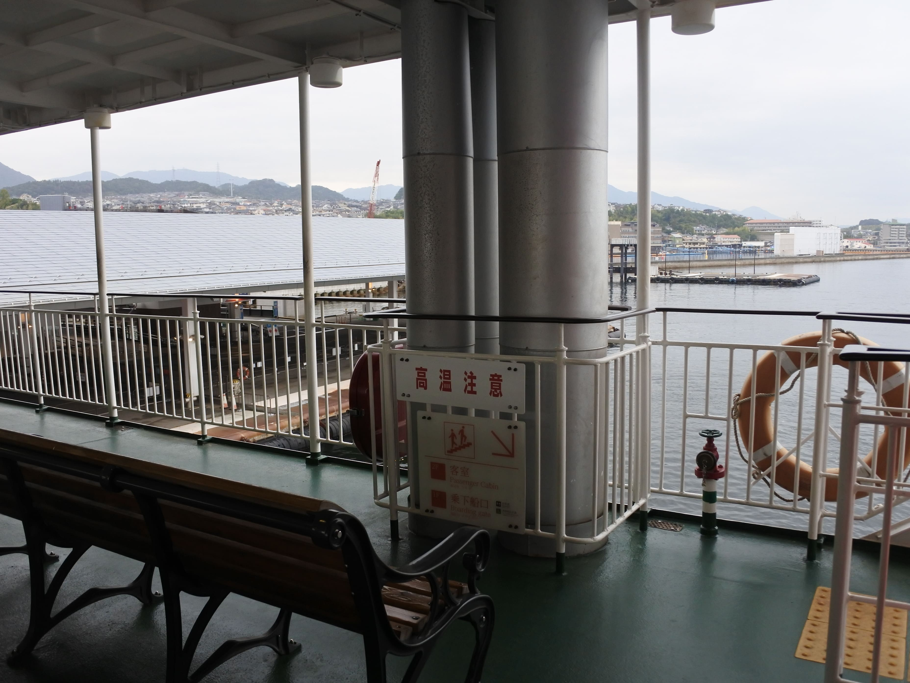
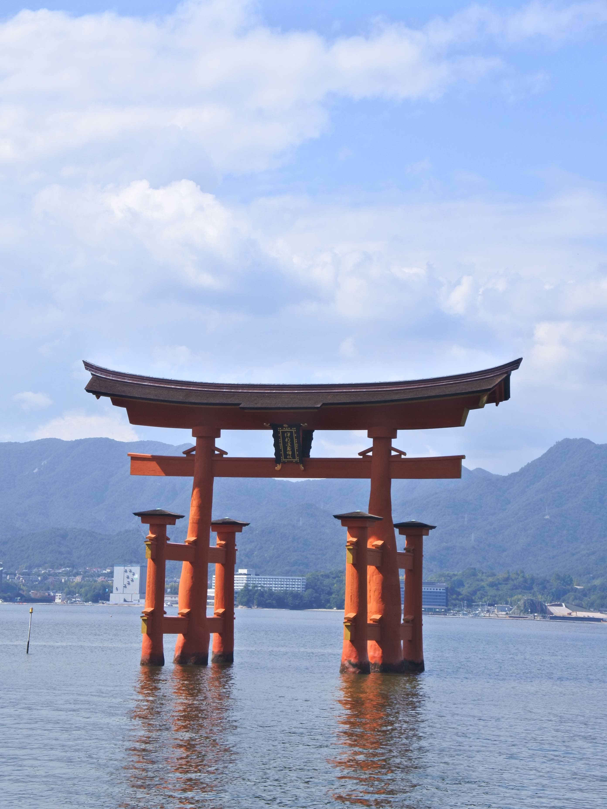
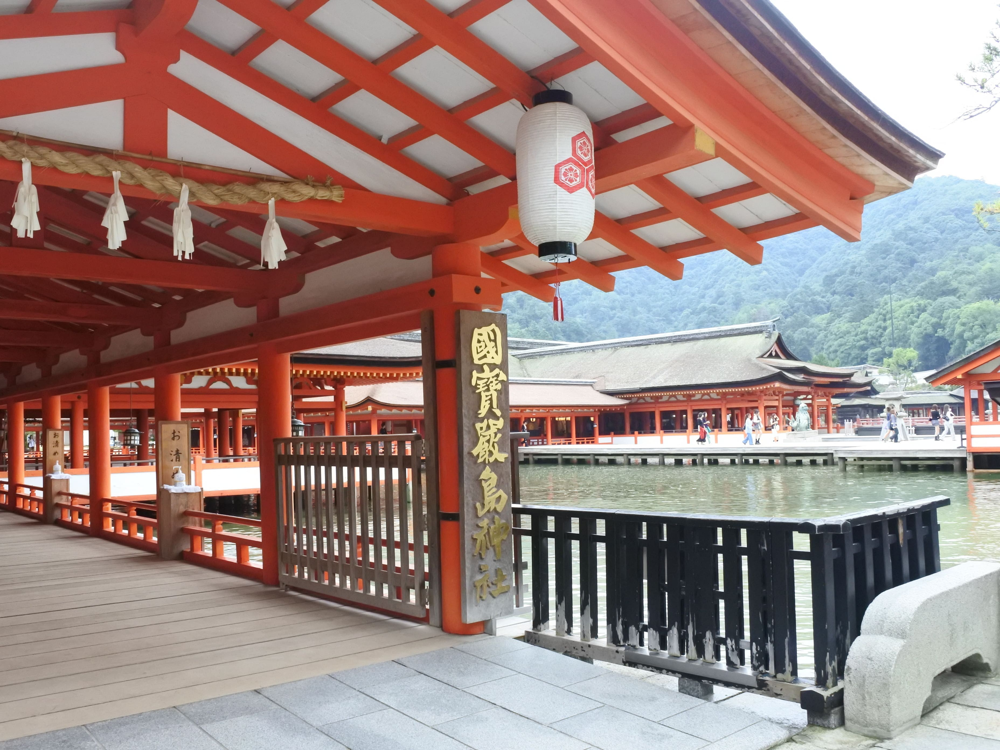
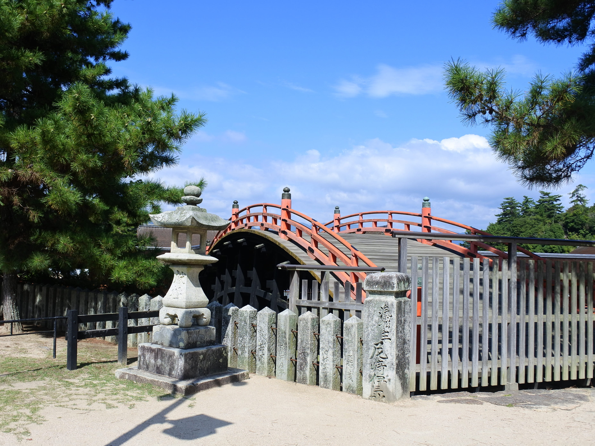
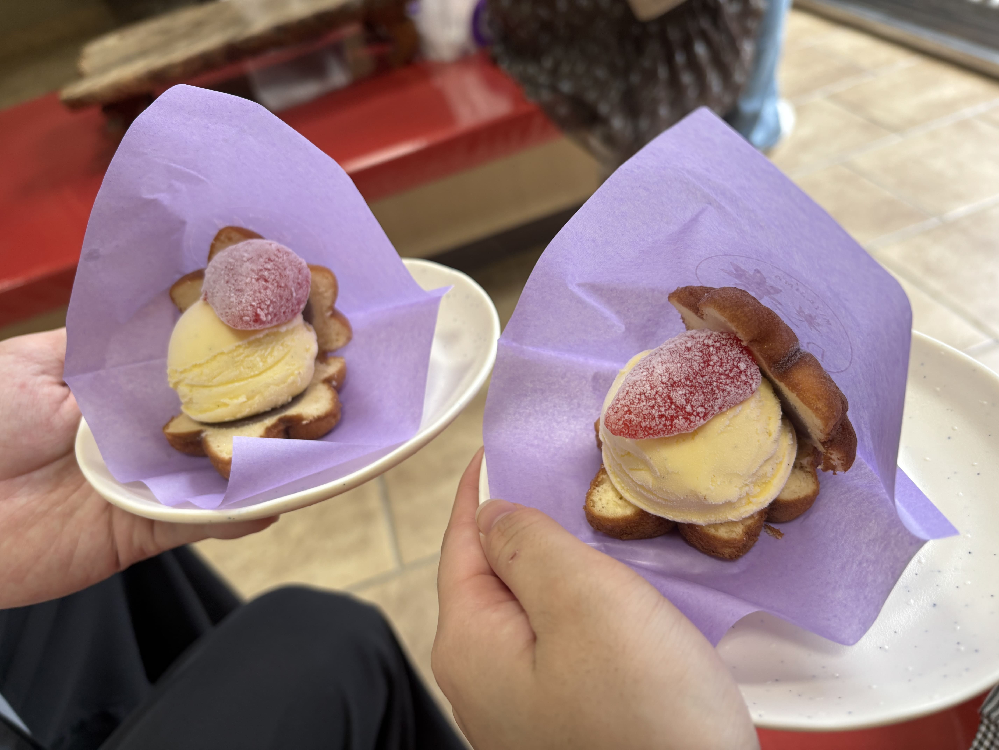
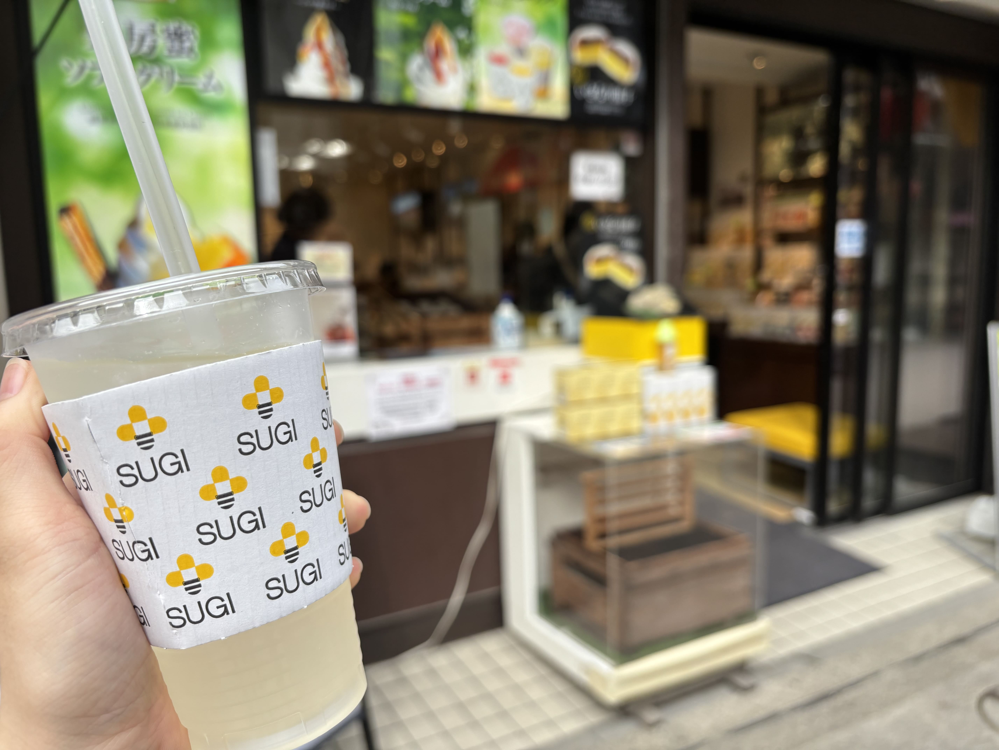
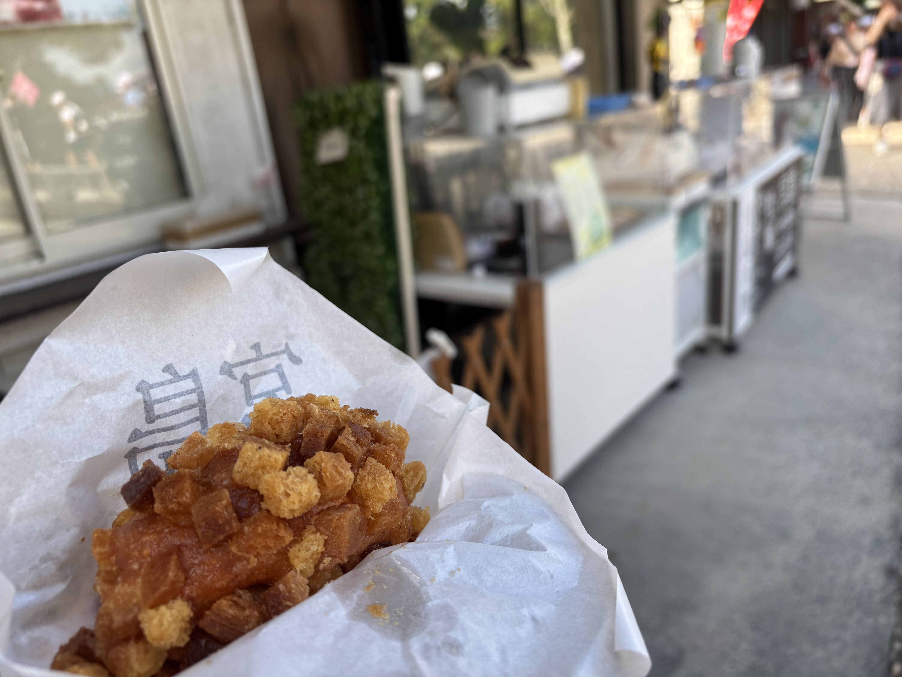
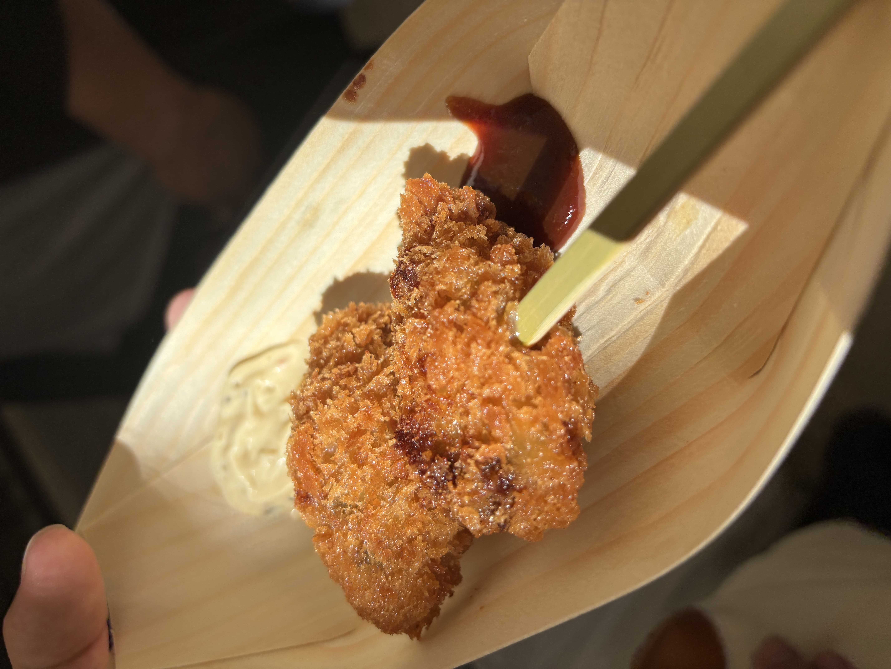
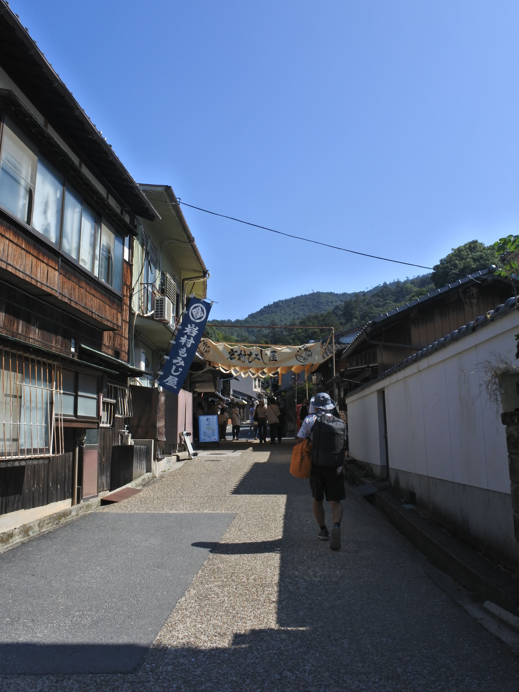
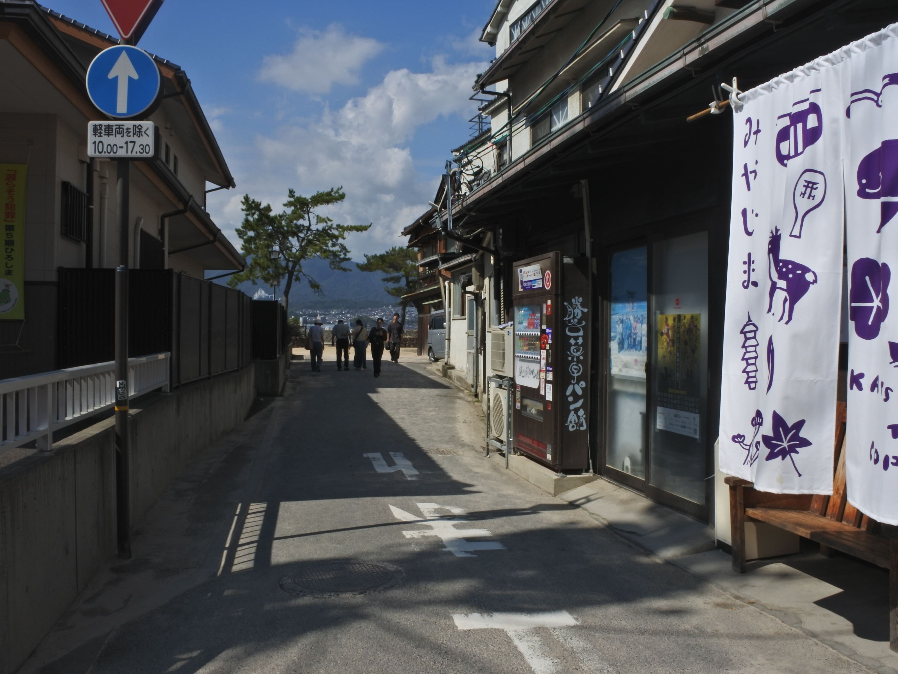

宮島
JR西日本宮島フェリー

フェリー何気に初めて乗った…
天気微妙すぎたけどなかなか楽しかった
そんなに揺れなくて乗り心地良かった
JRって電車以外もやってたんだ
厳島神社

参拝時間
6:30～18:00
(詳細はホームページ)
参拝料金
大人 300
高校生 200円
中学生 100円
やっぱ宮島と言ったらこの鳥居
思ってるより大きくてびっくり
結構水面上がってきて
神社自体も沈んでた


だいこん屋

open 8:30～17:00
あいすさんどもみじ
300円
もみじ饅頭とアイスの組み合わせが
まずいわけないんよね
こういうのってどうやって
食べるのが正解なんだろう
杉養蜂園

open 9:00～17:45
はちみつドリンク ゆず
450円
めっちゃ暑かったから
冷たい飲み物が一番おいしい
さっぱりしてるけど甘くておいしい
砂糖使ってないらしい
(宮島限定というわけではない)
宮島咖喱麵麭研究所(宮島カレーパン研究所)

open 8:00〜18:00
牡蠣カレーパン
600円
いままで食べたカレーパンの中で
一番おいしかった！
衣がザクザクで中身もたっぷり
だいぶボリュームあって
めちゃおなかいっぱい
牡蠣フライ串専門

open 11:00～17:00
牡蠣フライ(2個)
500円
牡蠣というものを人生で
初めて食べた
個人的にはそんなに
好きじゃなかったかも
好きな人は好きな味
私の味覚が子供すぎる
景色

いい感じの路地
レトロな建物がたまらん…
夏休みって感じの景色

海が見える路地
こういう道生きてて一番レベルに好き
標識が見えるのが個人的推しポイント